Wallgates is a free, open-source live wallpaper engine for Windows. Shaders, web pages and videos that react to your music, with no Steam, no account and no telemetry.
Windows 10 & 11 · tiny installer · no admin rights · GPL-3.0
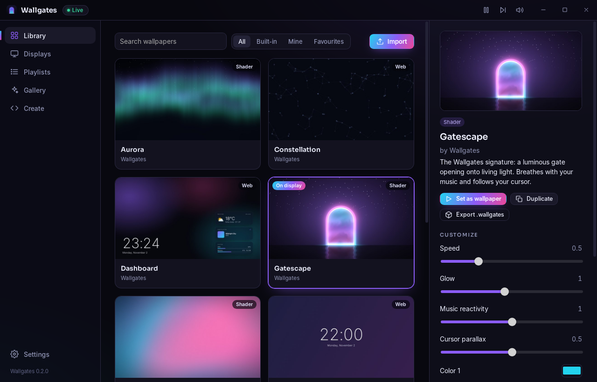
Pauses, throttles or fully unloads when a game covers a display, including borderless windows, per display.
A different wallpaper per monitor or one spanning all. Monitors are recognised by hardware, so nothing shuffles after sleep.
System audio spectrum, now playing with cover art, cursor parallax, CPU/RAM and weather, with permissions you can see.
Rotate on a timer, shuffle, or switch at real sunrise and sunset for your city, with smooth crossfades.
Write a shader or a web page and watch your desktop update as you type, with errors shown inline.
No executables, ever. Web wallpapers are sandboxed and offline by default. No hooks, no services, no admin.
Import images, videos, .wallgates packages, and Wallpaper Engine video & web projects, all at once.
Paste the ISINs of your watchlist and portfolio, pick your exchange: prices, intraday charts and P/L on your desktop.
CPU and GPU temperatures, per-core load, VRAM, disks, network and top processes on a retro CRT terminal.
Optionally mirror your wallpaper to the Windows lock screen and background.
| The usual pain | Wallgates |
|---|---|
| Game FPS tanks; pause misses borderless games | ✓ Detects any window covering a display; Pause, Eco or Unload |
| Wallpapers lost after sleep or reconnecting a monitor | ✓ Hardware-based display identity |
| Wallpaper vanishes after Explorer restarts | ✓ Automatic re-attach watchdog |
| Malicious "application" wallpapers | ✓ Executables are never run; web wallpapers are offline by default |
| Needs Steam and an account | ✓ Standalone, no account, no telemetry |
| Widgets require Rainmeter | ✓ Weather, music, CPU/RAM built into wallpapers |
| Closed source | ✓ GPL-3.0, audit and contribute on GitHub |
Every wallpaper is customizable: colors, speed, music reactivity and more.
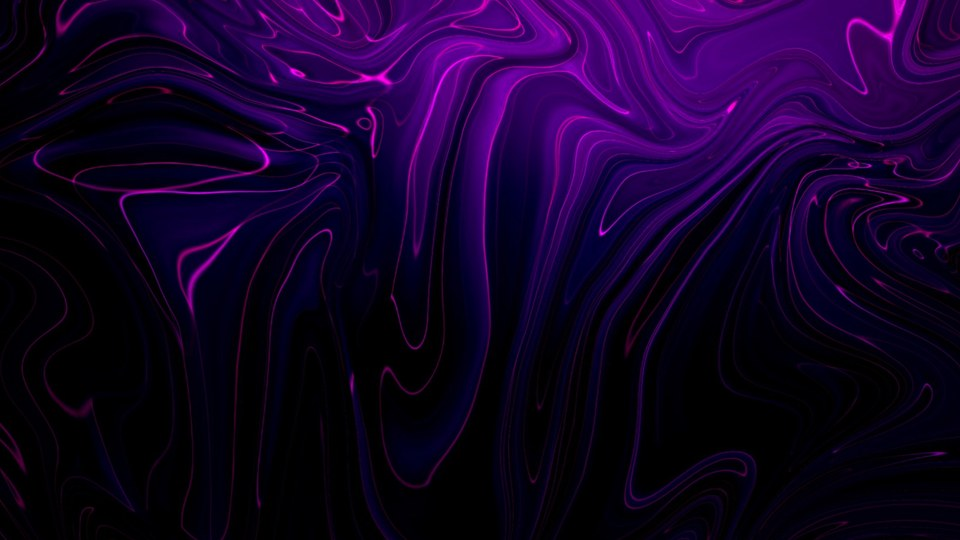
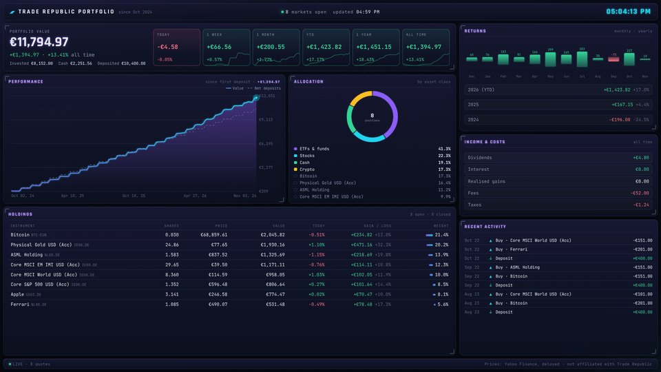
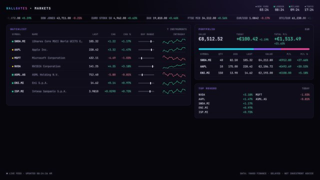
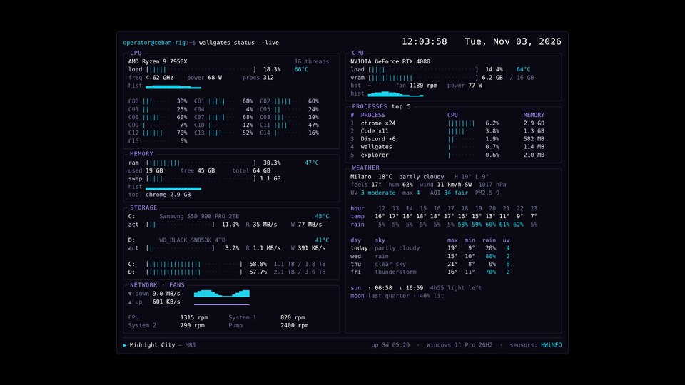
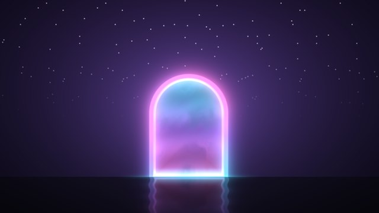
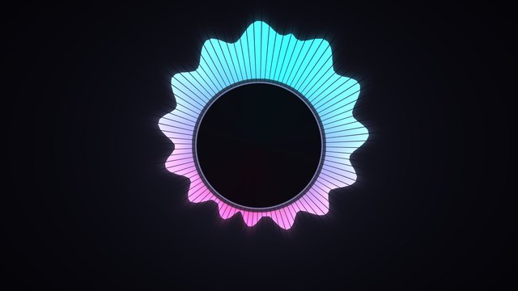
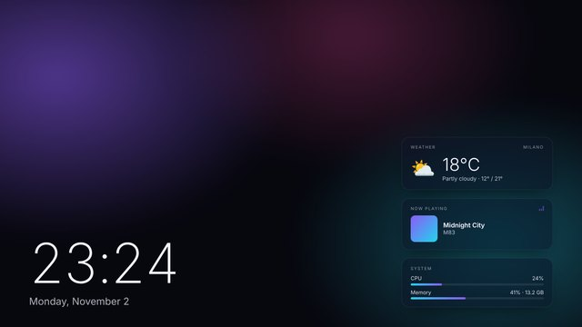
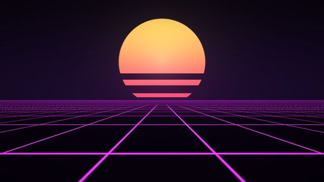
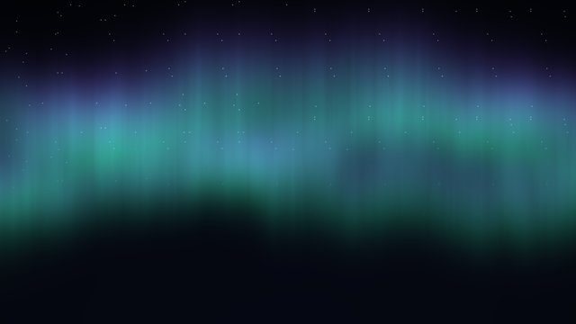
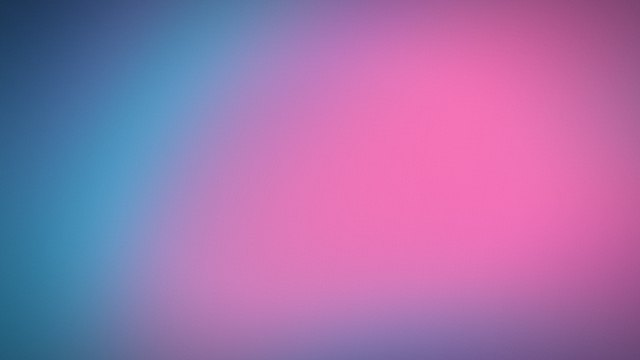
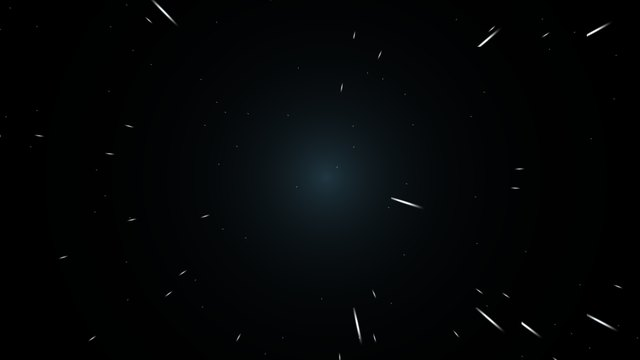
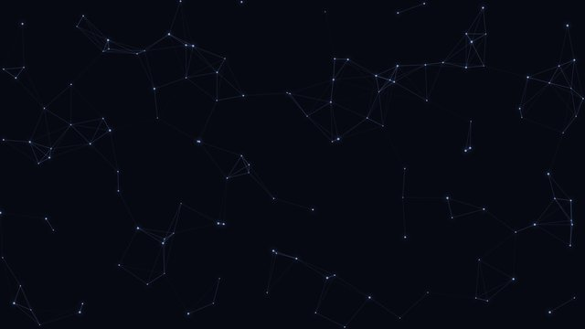
Yes. Wallgates is open source under GPL-3.0. No ads, no tracking, no paywalled features.
New independent apps show this until they build download reputation. Click More info → Run anyway. The full source is public, every release lists SHA-256 checksums, and signed builds are in progress.
By default Wallgates pauses the wallpaper on any display covered by a game or fullscreen app, including borderless ones. You can switch to "Unload" to free GPU memory entirely, or add per-game rules.
Video and web wallpapers can be imported, even your whole workshop folder at once. Web wallpapers keep their options and audio reactivity. Scene wallpapers use a proprietary format and can't be imported.
Open Create in the app, pick a template and start typing. Your desktop updates live. See the format guide.